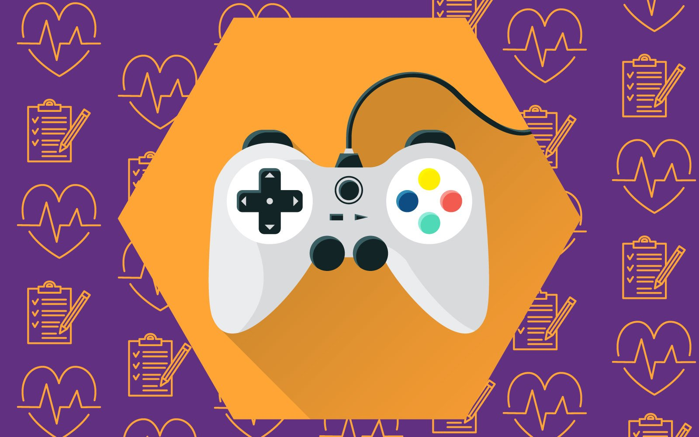

¿Jugar a videojuegos afecta a la salud?
Antes se jugaba a las canicas, el pañuelo, el escondite, la rayuela, la comba, la peonza o las tabas, entre otros. Hoy en día, la realidad es muy distinta. Llegó la era de los videojuegos y parece que para quedarse. Pero, ¿es bueno o es malo? Lo cierto es que jugar a videojuegos tiene sus ventajas y sus desventajas, pero con moderación y sabiendo hacer buen uso de ellos, podríamos decir que sí, que jugar a videojuegos es bueno.
No existe un diagnóstico oficial para determinar un trastorno de salud por videojuegos en los Estados Unidos, pero es probable que haya uno pronto. Los síntomas de problemas con videojuegos de internet se enumeran en un libro de referencias que usan los médicos de la salud mental. A continuación, las cosas que puede notar si su niño tiene hábitos malsanos con los videojuegos. Está obsesionado con los videojuegos, se pone triste, irascible o ansioso cuando no se le permite jugar. Desea jugar más y más y no puede jugar menos o dejar de hacerlo. Ya no está interesado en otras actividades que solía disfrutar. Miente sobre la cantidad de tiempo que pasa jugando videojuegos. Usa los videojuegos para aliviar el mal humor.
Jugar a videojuegos es bueno porque…
A grandes rasgos, jugar a los videojuegos es bueno para el cerebro. Mejora la atención, la memoria y la coordinación visual y manual, así como previene del envejecimiento cerebral. Entre otras ventajas de los videojuegos, lo cierto es que también estimulan varios sentidos al mismo tiempo, favorecen que los usuarios sean más participativos gracias a la interactividad y fomentan el razonamiento, el discernimiento y la curiosidad.
Jugar a videojuegos es malo porque… Entre sus hándicaps está su gran poder adictivo, su elevado coste y que puede generar trastorno del sueño, entre otros. Aunque la verdadera desventaja que preocupa a padres y docentes, sobre todo en el caso de los más pequeños, es que los videojuegos pueden provocar rechazo a otro tipo de material didáctico como los libros o simplemente al contacto con el aire libre y a los juegos fuera de casa, y que a su vez cuentan con otra serie de ventajas que no tienen los videojuegos, como jugar con otros niños y desarrollar habilidades sociales. De ahí que en los últimos años, el uso de videojuegos se haya visto sometido a críticas y detractores. Sin embargo, el tiempo y diversos estudios han demostrado que con moderación, como todo, jugar a videojuegos es bueno. Por eso lo más recomendable es intercalar este tipo de juegos con otros al aire libre y sacar así el máximo partido de todos ellos. Así como, cuando se trata de los más pequeños, la supervisión por parte de padres.